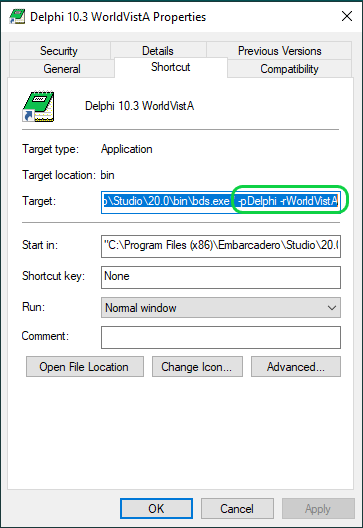
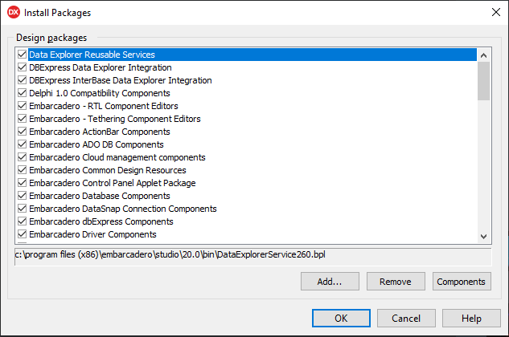
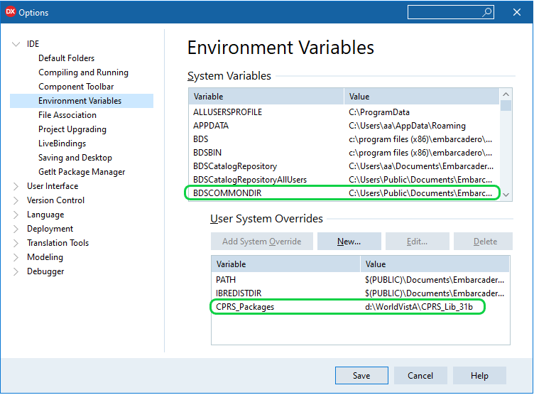
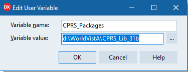
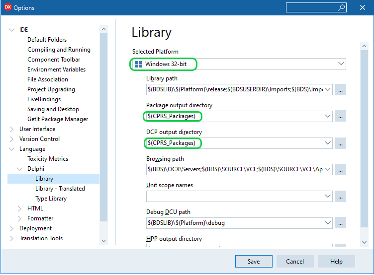
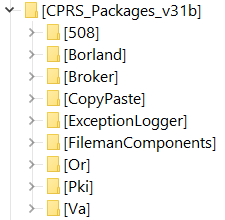
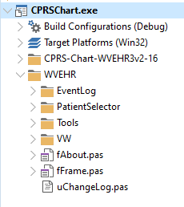
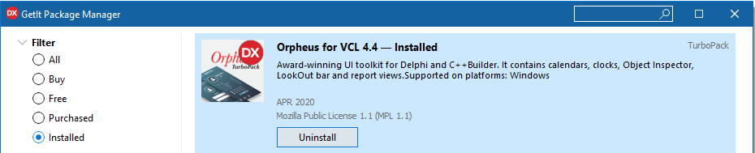

WorldVistA CPRSChart Ver 3-16
This document describes process of creation WorldVistA CPRSChart - client application that provides access to a patient data in WorldVistA EHR system.
It does not discuss installation or usage of the EHR Server software.
The version of CPRSChart for WorldVistA EHR 3.1 Ver 3-16 will be referred as WV-CPRSv3-16 in this text.
Document map:
Development Tools
Source Code
Delphi IDE Setup
Package Compilation
GUI Project Details
Vitals DLL
Additional Information
- Delphi 10.3.3 (RIO) Professional. (Community Edition)
- Delphi 10.4 (SYDNEY) Professional
CPRS Packages are components developed in Delphi specifically for CPRS graphical user interface.
GUI The source code of WV-CPRSv3-16 GUI is the result of merging VA CPRS GUI v30c (VistA patch OR*3.0*404) into WVEHR3v2-16. The source code of the WVEHR3v2-16 was updated with several enhancements and bug fixes.
CPRS Packages While the source code of CPRSChart GUI is changing significantly with every version of the application the Packages code is typically backward compatible. In preparation of VW-CPRSv3-16 we used source code of CPRS Packages v31b. You may replace the packages source with the version of 30c if prefer to use code 100% compatible with VA CPRS GUI v30c. (Usage of CPRS Packages 30c with WV-CPRSv3-16 GUI is not included in this document)
| NOTE: | Not all packages included in Packages v31b suite are required for compilation of VW-CPRSv3-16 |
It is common to use Delphi for development of several applications using
the same set of component libraries.
In case you need to work with different versions of the same library
you will need to control what version of packages Delphi IDE should use.
Delphi resolve this issue by use of IDE command line -r switch. The switch value identifies Windows registry key that contains parameters of the IDE at startup.
The next image illustrates the use of -r switch to start IDE. The switch value is set to WorldVistA:
| NOTE: | The icon image was also changed - as the reminder of the special IDE settings. |
1. Removing previous versions of packages
To review packages installed in IDE:
- Close project opened in IDE with "File|Close All" command of Delphi main menu
- Open packages dialog with "Components|Install Packages..." command of main menu.
- Verify if there are previous versions of CPRS packages installed.
- Use "Remove..." button to remove a package

| NOTE: | If you compiled packages before and have previous versions of the *.bpl files not listed in the "Install Packages" dialog you might need to find and remove them manually. |
2. Setting environment variables to specify location of the compiled packages
By default Delphi saves results of package compilations in the direcory defined by the environment variable BDSCOMMONDIR. Changing the default value allows you to control where the compiled packages and other files required for your project compilation will be placed.

To add or modify environment variables:
- Opent IDE options dialog with "Tools|Options..." command of Delphi main menu.
- Use "New..."or "Edit..." buttons to open variable editor

3. Updating Delphi Options
Use the environment variable created in step 2 in fields Package output directory, DCP output directory:

Don't forget to select the correct Compilation Platform Windows 32-bit!
| NOTE: |
CPRS Packages v31b are configured to use pre- and post- build events:
pre- build event creates a Resource directory.
post- build event copies .dec, .dfm files to the Resource directory.
|
| Fields Package output directory, DCP output directory set in Options dialog are used by IDE for compilation of ALL packages. Keep it in mind when compiling libraries other then CPRS_Packages |
Add variabels to Library Path and Browsing Path

| NOTE: | You need to add reference on Resource location to both Library Path and Browsing Path lists |
4. Save options and restart Delphi IDE
After restart Delphi will offer to add new environment to existing set - confirm this change.
Now it's time to open Package Group containing source code of the CPRS packages.GUI and Packages must be compiled with the same version of Delphi. Original CPRS GUI v31b was compiled with Dephi XE8.
Two package groups are prepared for compilation with Delphi version 10.3.3 and 10.4:
- CPRS_Packages_SYDNEY - Delphi 10.4
- CPRS_Packages_RIO - Delphi 10.3.3
Package names include references on the compiler versions (340 for SYDNEY, 330 - RIO).
The source code of CPRS Packages is kept in the CPRS_Packages_31b directory. Location and short description of the individual packages:
|  |
|
| NOTE: | Packages CopyPaste, FMDC are not required for compilation of EHR 3.1 Ver 3-16. |
|
The code of packages XWB_RXE8, XWB_DXE8 is similar to the VA released RPC Broker package (VistA patch XWB*1.1*65). If you have Broker Patch 65 installed you can use it and ignore installation of the version included in CPRS_Packages_31b suite. |
To compile code with Delphi 10.4 several constant definitions of the package PKI file wcrypt2.pas should be updated with the references to the type.
For example, line 18054 requires a reference to the type LPCSTR:
| Original code : | REVOCATION_OID_CRL_REVOCATION = LPCSTR('1'); |
| Modified: | REVOCATION_OID_CRL_REVOCATION:LPCSTR = LPCSTR('1'); |
Similar changes should be applied to the next lines of file wcrypt2.pas :
- 18054
- 18344..18355
- 19409..19411, 19414, 19417, 19420
Compilation steps are straightforward:
1. Open package group matching compiler version
CPRS_Packages_SYDNEY - Delphi 10.4
CPRS_Packages_RIO - Delphi 10.3.3
2. Rebuild packages starting from the top of the list.
3. Install Design-time packages after the build.
To verify if the components are now available restart Delphi,
open CPRS GUI project, and review the component palette.
If all packages are compiled and installed correctly components palette should include
sections "Kernel", "VA 508", "CPRS" all GUI forms should open without errors.
Compiled untits will be placed in "CPRS\DCU" directory while executable file will be kept in "CPRS" directory.
This is the WV-CPRSv3-16 project tree:

Project file compiles as any other Delphi application. The rest of this section describes differences made to the application.
The WV-CPRSv3-16 project was built as an enhancement of the WVEHR3v2-16 and utilizes most of its code.
Source code of the WVEHR3v2-16 is kept in the folder CPRS-Chart-WVEHR3v2-16.
Files in this folder were updated to match compiler requirements as definitions of some Delphi 10.3 constants were changed.
Even if the files were not used in the WV-CPRSv3-16 they were retained in the folder.
For example, the original project file CPRSChart.dpr still resides in CPRS-Chart-WVEHR3v2-16 folder.
(And could be used to recompile WVEHR3v2-16 GUI with the Delphi 10.3).
Files introduced in WV-CPRSv3-16 were placed in the WVEHR folder.
Changes to the project options file CPRSChart.dproj:
- Direct references on files included in CPRS packages was removed from the project
- Project version updated
Two conditional symbols were added:
- CCOW - identifies code required to support CCOW functionality
- WORLDVISTA - code that was introduced by WorldVistA
| NOTE: | By default only WORLDVISTA symbol is defined in the project and thus the CCOW functionality is disabled. |
Changes to the project file CPRSChart.dpr:
- Location of the WorldVistA files was changed - files are placed in WVEHR directory
- Code updated: connection Verificaton if the application is being updated while GUI is starting was disabled
- Connection and application context creation moved from the fFrame unit to the project file
- List of the files included in the project was changed
Files removed from the project CPRSChart.dpr: |
|
| File | Comment |
| VERGENCECONTEXTORLib_TLB | Replaced with the one of Broker package |
| fxBroker | Replaced with fEventLog |
| fxServer | Replaced with fEventLog |
| fAbout | Replaced with 'WVEHR\fAbout.pas' |
| fSplash | Replaced with 'WVEHR\fAbout.pas' |
Files included in the project CPRSChart.dpr when conditional WORLDVISTA is defined: | |
| File | Comment |
| fVW_Alerts.pas | Replacement of fAlerts |
| fVW_DupPts.pas | Replacement of fDupPts |
| fVW_PtSelDemog.pas | Replacement of fPtSelDemog |
| fVW_PtSelect.pas | Replacement of fPtSel |
| fVW_PtSelOptns.pas | Replacement of fPtSelOpt |
| uVW_PtSelect.pas | |
| uVW_Utils.pas | |
| fVW_PtSelOptSave.pas | Replacement of fPtSelOptSave |
Files included in the project CPRSChart.dpr when conditional WORLDVISTA is undefined: |
|
| File | Comment |
| fPtSens | |
| fPtSel | Replaced with 'WVEHR\PatientSelector\fVW_PtSelect.pas' |
| fPtSelDemog | Replaced with 'WVEHR\PatientSelector\fVW_PtSelDemog.pas' |
| fPtSelOptns | Replaced with 'WVEHR\PatientSelector\fVW_PtSelOptns.pas' |
| fPtSelOptSave | Replaced with 'WVEHR\PatientSelector\fVW_PtSelOptSave.pas' |
| fDupPts | Replaced with 'WVEHR\PatientSelector\fVW_DupPts.pas' |
Files added to the project CPRSChart.dpr: | |
| File | Comment |
| WVEHR\fFrame.pas | Replacement of the original fFrame unit. Changes:
|
| WVEHR\VW\rVWEHR.pas, | |
| WVEHR\Tools\uVersionCompare.pas, | |
| WVEHR\VW\frmEPrescribe.pas | |
| WVEHR\EventLog\fEventLog.pas | RPC Log replacement |
| WVEHR\EventLog\uGN_RPCLog.pas | RPC Log utilities |
| WVEHR\fAbout.pas | |
| WVEHR\Tools\uVW_Size.pas | |
| WVEHR\uChangeLog.pas | |
Changes to the original .pas files: | |
| File | Comment |
| dShared.pas | Uses clause updated to avoid compiler warnings |
| fDCSumm.pas | Compiler conditionals added to control CCOW related code |
| fCover.pas | Bug fixes |
| fEncnt.pas | Uses clause cleanup |
| fFrame.pas | Compiler conditionals added to control CCOW related code. Bugs fixes. |
| fGraps,pas | WorldVista enhancements |
| fLabs.pas | WorldVista enhancements. Bugs fixes. Compiler conditionals added to control CCOW related code |
| fMeds.pas | Compiler conditionals added to control CCOW related code. Code formatted |
| fNotes.pas | Compiler conditionals added to control CCOW related code |
| fProbEdt.pas | Uses clause cleanup |
| fProbs.pas | Compiler conditionals added to control CCOW related code |
| fReports.pas | WorldVista enhancements. Bugs fixes. Compiler conditionals added to control CCOW related code |
| fRprBox.pas | Compiler conditionals added to control CCOW related code |
| fSurgery.pas | Compiler conditionals added to control CCOW related code |
| fVitals.pas | Compiler conditionals added to control CCOW related code |
| rCore.pas | Code formatted |
| rMisc.pas | Code enhancement |
| rReports.pas | WorldVista enhancements. |
| uInit.pas | WorldVista enhancements. |
| uProbs.pas | Uses clause cleanup. |
| uReminders.pas | Uses clause updated to avoid comiler warnings |
| Consults\fConsults.pas | Compiler conditionals added to control CCOW related code. Code formatted |
| Orders\fODBase.pas | Compiler conditionals added to control CCOW related code |
| Orders\fOrders.pas | Compiler conditionals added to control CCOW related code |
| Orders\fOrdersRelease.pas | Changed unit name in uses clause from Hash to XWBHash |
| Orders\uOrders.pas | Uses claus updatedCompiler conditionals added to control CCOW related code |
| Tools\fGN_RPCLog.pas | WorldVista enhancements. |
Source code of the Vitals GUI (patch GMRV*5.0*38) can be found in directory GMRV-5-0-38. The following changes were made to the original code:
| File | Comment |
| Vitals.dpr | Creation of the frmRoomSelector removed from the project source |
| GMV_VitalsViewEnter.dpr | function CheckVersion updated. See conditional WORLDVISTA. Unused code commented out. Comments added and formatted. |
| fGMV_UserMain.pas | Reference on VCLTee.TeEngine added to the uses clause to avoind compiler warning |
| fGMV_HospitalSelector.pas | Commented code responsible for error message |
| fGMV_InputLite.pas | Code updated to process cases no default input template available |
| mGMV_Lookup.pas | Unused code commented out |
Compilation of the Vitals GUI and DLL requires installation of 2 packages:
| Orpheus | Available free under MPL 1.1 |
| ROR_Components | Package originally developed for Clinical Case Registry Project. Source code included in patch GMRV*5.0*38. |
To recompile GMV_VitalsViewEnter:
- Install Orpheus package
- Install ROR_Components packages
- Recompile DLL
You can install the latest version of the Orpheus using Delphi GetIt Package Manager

| NOTE: | You can also recompile the source code of the Orpheus or OrpheusLite packages. See .zip files in the GMRV-5-0-38 folder. |
2. Installing ROR_Components package
Package source code is in the GMRV-5-0-38\CCR-COMPONENTS folder.
Use project ROR_Components_D10_3_3 for compilation with Delphi 10.3.3 or 10.4
| NOTE: | Project was updated to put files required for compilation of DLL in directories defined by CPRS_Packages environment variable. |
3. Recompiling DLL
Use Vitals project group (directory GMRV-5-0-38) to compile
GMV_VitalsViewEnter or othe GUI of the Vitals suite.
| Send you questions regaring WorldVistA CPRSChart to | info@worldvista.org |
| WorldVistA on GitHub: | WorldVistA |
| WorldVistA web site | worldvista.org |